A credential that proves a candidate is real, the same person every round, and can actually think with AI.
Today an employer cannot be sure the person on a video call is a real human, is the same person across interview rounds, or can truly do the job. HireProof turns “trust me” into a credential anyone can cryptographically verify in under two seconds — offline, with no login.
InnovateZ 2026 (Zentiti) · Round 2 · Built with Next.js · Supabase · W3C VC 2.0
Contents
A working, deployed prototype — and a plain-English explanation of exactly how it works and why it is worth building.
1The problem and why now
2The market and the investment case
3The solution and the user journey
4Under the hood — exactly how it works
5The monitoring and detection system
6Value beyond a generic LLM
7Data sources, APIs and references
8Architecture and technical design
9Feature list
10Demo scenarios
11What is live today and what is next
12Why HireProof is the best
AAppendix — screenshots, step by step
1 in 4
candidate profiles fake by 2028 (Gartner)
41%
of firms actually hired a fraudulent candidate (Checkr)
$43.4B
identity-verification market by 2034
< 2s
to verify a credential, offline
All screenshots are collected in the Appendix and arranged in the order a candidate experiences them, so the body stays readable.
1
The problem and why now
Remote hiring quietly broke a basic assumption: that the person you interview is real, is the same person each round, and can actually do the work. In 2026, none of those are safe to assume.
The need, in simple words: companies are interviewing people who may not be real, may not be the same person in the next round, and may not actually be able to do the job. It is expensive, it is happening at scale, and the usual tools — résumés, certificates, basic ID checks — no longer catch it.
This is measured, not hype
Gartner — by 2028, one in four candidate profiles worldwide will be fake; 6% of candidates admitted to interview fraud; 59% of hiring managers suspect candidates use AI to misrepresent themselves.
U.S. DOJ (Nov 2025) — nationwide takedown of the North-Korean remote-IT-worker scheme: $15M+ forfeited, 100+ companies infiltrated with 80+ stolen identities.
Checkr — 41% of IT/security/risk leaders confirmed their organisation actually hired a fraudulent candidate.
India — AuthBridge reported a 9.46% discrepancy rate in IT/ITeS hiring; NASSCOM IT-BPM employs about 5.95M people — a huge, high-volume hiring surface.
The deeper problem most tools miss
Fake certificates are only the visible symptom. Even a genuine résumé says almost nothing about how someone performs under real conditions. The signal that actually matters now is execution under constraint — can you direct an AI and catch it when it is confidently wrong — not the completeness of a résumé.
“Fake certificates are the visible symptom, but the deeper issue is that even legitimate certifications tell you almost nothing about performance under actual conditions. Interviewed 60+ candidates last year — every one had the right credentials on paper. Maybe three could ship something functional from Day 1. The signal that matters is execution under constraint, not completeness of résumé. Solving that with AI is the right direction; good luck with the build.”
Today’s tools pick one of two losing strategies: a detection arms race (forever chasing better deepfakes), or surveillance (record every applicant, the candidate owns nothing). HireProof flips the model — the candidate owns the proof, and we measure the one skill that matters now.
2
The market and the investment case
A large, fast-growing market; a pain that just became the #1 hiring threat; a standards-and-regulation tailwind; and a position no incumbent occupies.
How big is the opportunity
In plain words: every company that hires online already pays for three things — checking identity, testing skills, and screening backgrounds. Those three budgets together are worth tens of billions of dollars and are growing fast. HireProof does all three in one short step, so it can earn a share of all three.
The hard figures below are sourced; the combined total is a directional estimate.
Identity verification
$14.9B → $43.4B
Skills / talent assessment
~$6B and growing
Background screening
~$5–6B
Combined TAM
~$25B → $55B+
Where HireProof sits — no one else fuses all three
Every piece exists somewhere, but no single product combines a live human-proof, an AI-judgment score, and a candidate-owned, offline-verifiable credential. That gap is our position. (✓ = does it · ~ = partial · — = no)
Capability
Coding tests HackerRank · CodeSignal
Identity vendors iProov · Persona
Credential networks Velocity · Dock
HireProof
Live anti-proxy liveness
—
✓
—
✓
Scores AI-collaboration judgment
~
—
—
✓
Same person across rounds
—
~
—
✓
Candidate-owned, offline credential
—
—
✓
✓
All three fused in one token
—
—
—
✓
Privacy-first & India-compliant
~
~
~
✓
The slice we own (SAM)
AI-era hiring integrity: deepfake/proxy defence plus AI-judgment assessment. The fastest-growing slice — “fake candidates” are now the #1 anticipated 2026 hiring threat.
The wedge we start with (SOM)
India-first, DPDP-compliant high-volume IT/ITeS hiring (NASSCOM ~5.95M workforce) — a compliance and privacy wedge US-centric incumbents handle weakly.
Why a company would invest
Validated, urgent pain — sourced from Gartner, the DOJ and Checkr, not vendor marketing.
Perfect timing — W3C Verifiable Credentials 2.0 became an official standard in May 2025; the EU AI Act and India DPDP create a compliance tailwind now.
Proven investor appetite — Persona raised $200M at a $2B valuation (and blocked 75M deepfakes in one month); Incode is raising at up to $3B.
Capital-efficient — all TypeScript, serverless, in-browser ML, no heavy infrastructure; commodity identity vendors drop in behind one interface.
How HireProof makes money
Per-verification pricing for employers and platforms
An enterprise console subscription (governance: re-verify, revoke, audit)
Hiring is shifting from “trust the résumé” to “verify the human and their judgment.” HireProof is the candidate-owned trust rail for that shift — at the exact moment the market, the standards and the regulation all line up.
3
The solution and the user journey
One candidate. One ~90-second session on a webcam. One tamper-proof badge any employer can verify in seconds.
ConsentDPDP, camera + mic
→
Live checkactions + spoken code
→
Secured taskcatch the AI error
→
Scorejudgment, not usage
→
Badgesigned + QR
→
Verifyemployer, offline
The journey, step by step
ConsentThe candidate grants camera and mic through an itemised, DPDP-style consent screen.
Live checkA random sequence of actions plus a spoken 3-digit code proves a live human is present right now. (Appendix, Figure 1)
A fresh taskA skill task is generated the instant they start, so it cannot be pre-staged. (Figure 2)
Secured test modeThe task runs full-screen with the camera on; clear, fair rules are shown first. (Figure 3)
The AI taskA real problem with an AI assistant that is steered to be confidently wrong; the candidate must catch and correct it. (Figures 4–6)
Explain it backA short, live spoken explanation binds the work to the verified person. (Figure 7)
The badgeA tamper-proof, signed credential with a QR — the candidate owns it and reuses it with any employer. (Figure 8)
VerifyAn employer scans the QR and verifies the signature offline, in under two seconds, with no login.
4
Under the hood — exactly how it works
The literal sequence from “candidate clicks start” to “employer trusts the result”, naming the real mechanism at every step.
Step / API
What actually happens
Session /api/session
Camera + mic granted via itemised consent. The server creates a session with a random nonce.
Challenge
The server issues a unique action sequence (3 of blink/turn/mouth/smile, shuffled) plus a 3-digit spoken phrase — generated the instant the candidate starts, so it cannot be pre-staged.
Capture
MediaPipe FaceLandmarker confirms each action live; face-api computes a 128-D face descriptor locally; the Web Speech API confirms the spoken phrase. Raw video never leaves the device.
Re-check /api/liveness
The server independently verifies the actions happened in order, the face is real (descriptor L2-norm ≥ 0.1 blocks blank/bot vectors), the timing is fresh and monotonic, and the spoken digits match. The descriptor is stored in pgvector.
Cross-round
On a re-verify, the new descriptor is compared by cosine distance (threshold 0.30) to the enrolled one — same person, or a MISMATCH flag for the proxy / seat-swap case.
Task /api/task · /assistant
A fresh task with a hidden planted error; the assistant is steered to be wrong. Every turn is recorded server-side as the model produced it, so the score is computed from an authoritative transcript a forged payload cannot fake.
Score /api/score
Deterministic signals (did they ship the AI’s answer verbatim?) plus a locked-rubric grader at temperature 0. Shipping the AI’s flawed answer hard-caps the score at 40, outside the model.
Audit
Every step writes an append-only, hash-chained row. Editing any field or reordering breaks the chain — re-checkable with verify_audit_chain().
Mint /api/mint
Assemble a W3C VC 2.0, sign it with Ed25519, bind a holder secret into the signature, render a QR.
Verify /v
The employer fetches the issuer key from /.well-known/did.json and verifies the signature offline. Tampering is rejected.
How the score is computed
Part A (no LLM): a verbatim-copy check using two similarity measures, so paraphrasing the AI’s wrong answer cannot slip through; shipping it caps the score at 40. Part B (locked rubric, temperature 0): five sub-scores 0–5 — error detection, direction quality, verification, iteration, final correctness — each justification must quote the transcript, and the grader is firewalled against prompt injection.
Formula: score = 100 × (error-detection 0.30 + final-correctness 0.25 + direction-quality 0.20 + verification 0.15 + iteration 0.10). Tone, confidence, accent and “cultural fit” are never scored (EU AI Act Art 5(1)(f)).
5
The monitoring and detection system
From start to signed, HireProof watches for the common ways people cheat a remote test — a stand-in, a helper off-camera, pasted answers, or tab-switching. It runs in four layers.
The golden rule: detection produces signals for a human reviewer, not automatic rejections. Only the two failure modes we test for — shipping the AI’s wrong answer, and injecting a score — affect the number, and even then they only cap it.
Layer 1 — Identity & livenessserver-enforced
Right actions in order · a real face (L2-norm check) · live, not replayed (freshness + timing) · the spoken nonce · a replay guard · cross-round face match (proxy / seat-swap).
Layer 2 — Live in-task proctorin-browser
On-device camera monitoring for no face, a second face, or looking away, plus tab-switch and leaving full-screen. Each sustained issue is one warning; three warnings end the test. Raw video stays on the device.
Layer 3 — Anti-outsourcing telemetryreview only
Paste-heavy, fast-solve, and focus-away signals, captured on the client and re-validated on the server. They inform a human reviewer; they never auto-reject.
Layer 4 — Anti-gaming scoringserver-enforced
Verbatim-copy detection (caps the score), a prompt-injection firewall, a server-authoritative transcript, and rate limits.
Everything is auditable: each check is written to the hash-chained audit log (the reviewer’s view is in the Appendix, Figures 9–10).
6
Value beyond a generic LLM
The direct answer to “why can’t I just paste the same input into ChatGPT, Claude or Gemini?”
It is a protocol, not a prompt. Liveness depends on a server-issued random challenge checked against real-time motion — a chatbot has no challenge-response loop.
It is bound to the moment. The sample is tied to a phrase generated under two minutes ago — an LLM will happily score a pre-recorded or proxy submission.
It is stateful across rounds. Face descriptors in pgvector catch seat-swap rings; an LLM is stateless per call.
It produces a cryptographic, candidate-owned credential. An employer trusts the issuer key, not a screenshot — ChatGPT cannot mint a signed credential against a published key.
Its scoring is anchored and auditable. A planted error, deterministic caps, and a hash-chained trail — not an unanchored opinion.
Compliance is built in. Consented, minimised, no emotion inference, append-only audit, erasure by revocation.
In one line: ChatGPT can generate text about a candidate. HireProof issues a fact about a verified human event, signed so anyone can check it without trusting us.
7
Data sources, APIs and references
Every external library, model, API and framework used — and how each one shapes the output.
Source / API / framework
Role in the pipeline
MediaPipe Tasks-Vision
In-browser face landmarks and head-pose — confirms the liveness actions and powers the in-task proctor.
@vladmandic/face-api
In-browser 128-D face descriptor — the input to cross-round matching.
Web Speech / Web Audio
Spoken-nonce transcription and the live explain-back.
Anthropic Claude
Generates the planted-error task; the steered assistant and the temperature-0 grader.
Google Gemini (AI SDK v6)
Automatic failover with the same schemas, so the flow is reproducible.
Supabase (Postgres + pgvector)
17 tables; cosine distance for cross-round and ring matching; the hash-chained audit log.
jose (Ed25519 / EdDSA)
Signs the W3C credential, verifiable against the published did:web key.
Node crypto
scrypt password hashing, HMAC sessions, and the SHA-256 audit hash-chain.
zod
Validates and bounds every API request body server-side (anti-tamper).
qrcode / @zxing
Render and scan the credential QR (a real camera scanner on /v).
Next.js 16 · React 19 · Tailwind v4
The app framework, UI and styling — one TypeScript codebase, no separate service.
Standards & regulations that shape the design
W3C Verifiable Credentials 2.0 + DID Core + did:web — the credential format and key publication.
India DPDP Act 2023 + Rules 2025 — itemised consent, data minimisation, erasure by revocation.
EU AI Act — recruitment is high-risk; emotion recognition in the workplace is prohibited (Art 5(1)(f)), so scoring excludes all affect.
ISO/IEC 30107-3 + NIST FATE-PAD — the liveness benchmarks we build toward.
NYC Local Law 144 + EEOC four-fifths rule — the bias-audit framing.
8
Architecture and technical design
All TypeScript. Next.js 16 on Vercel with Supabase (Postgres + pgvector). In-browser biometrics; server-side signing, scoring and audit. The diagram shows how one request flows end to end.
System architecture & data flow — biometrics run in the browser (raw video stays on the device); the Edge API signs, scores and audits; any employer verifies the credential offline against the published issuer key.
Frontend
Next.js 16 (App Router), TypeScript, Tailwind, in-browser ML (raw video stays on-device)
Backend
31 Next.js API routes on the Vercel Node runtime — all TypeScript
Storage
Supabase Postgres + pgvector, region-pinned to Mumbai; hash-chained audit log
AI layer
Claude via Vercel AI Gateway with automatic Gemini failover; two tiers (task-gen, grader)
Crypto
jose Ed25519 signing behind one Signer boundary; did:web key publication and rotation
Deployment
Vercel; CI runs lint, typecheck, a 27-test trust suite and an offline verifier on every push
The employer console — the governance side, with re-verify, revoke and a tamper-proof activity log — is shown in the Appendix (Figure 11).
9
Feature list
Prove you are a real, live human
Randomised liveness (actions + spoken code)
Server re-check of actions, face, timing, voice
Cross-round face match (proxy / seat-swap)
Live spoken explain-back
Measure real judgment
Planted-error task
Accept-right / reject-wrong reliance probe
Transparent five-axis score with quotes
Verbatim hard-cap
A credential you own
W3C VC 2.0, Ed25519-signed
Offline verify in under 2s, no login
Holder binding (a private key, not a bearer token)
Revocation and status
Save to DigiLocker (demo)
Trust, governance and rights
Employer console (list, re-verify, revoke)
Hash-chained audit log
Cross-employer fraud-ring view
Live metrics and a signed fairness audit
India DPDP consent receipt + one-click erase
Continuous post-hire re-verification
10
Demo scenarios
Scenario
Input → processing → output
Good judgment vs blind accept
The AI gives a confidently-wrong answer. Catch and correct → score ~67. Blind-accept → the verbatim signal fires and the score is capped (~28–32). We score judgment, not usage.
Catch a proxy
Re-verify with a different face → cross-round distance > 0.30 → a live MISMATCH flag. Onboarding-only identity checks miss this.
Portability in seconds
The same QR at any employer’s /v → verify Ed25519 offline in under 2s, even with the network throttled. No integration, no account.
Governed lifecycle
An employer revokes a credential → /v flips to Revoked; the holder can still prove ownership; every step is in the audit trail.
Instant verification:npm run seed:demo signs three real credentials — GOOD (67), BLIND (32), REVOKED — that verify offline against the published did.json. The signatures are genuine.
11
What is live today and what is next
A working, deployed prototype — the full candidate flow, signing, offline verify, scoring, the four-layer detection system and the employer console all run end to end.
Live today
Randomised challenge-response liveness
Cross-round biometric match
Planted-error task + judgment scoring
Four-layer monitoring & detection
Spoken explain-back & reliance probe
Ed25519 W3C credential + offline verify
Holder proof-of-possession · revocation
Employer auth · hash-chained audit · metrics
Future scope
Certified PAD (ISO 30107-3) drops in behind the same interface
KMS/HSM-backed signing
FAR/FRR calibration with pilot volume
Live ATS push & DigiLocker (real contracts exist today)
Enterprise track: SSO/SCIM, SOC 2
12
Why HireProof is the best
It solves a real, urgent, expensive problem, validated by Gartner, the DOJ and Checkr.
It ships a fusion no incumbent has — live human-proof, AI-judgment, and a candidate-owned, offline-verifiable credential in one token.
It is real engineering, not a wrapper — Ed25519 credentials, did:web, pgvector, a hash-chained audit and an injection-proof grader.
It is privacy-first and compliant by design — raw video never leaves the device; DPDP and EU AI Act safe.
It is investable — a big market, perfect timing, proven investor appetite, and a capital-efficient build.
It is honest and demoable — every claim is something you can run, scan and verify yourself in seconds.
HireProof turns hiring from “trust the résumé” into “verify the human and their judgment” — a credential the candidate owns, an employer can check offline in under two seconds, and a regulator would approve of.
The candidate experience in order, captured from the live app, followed by the reviewer and employer views.
FIGURE 1 — LIVE CHECK
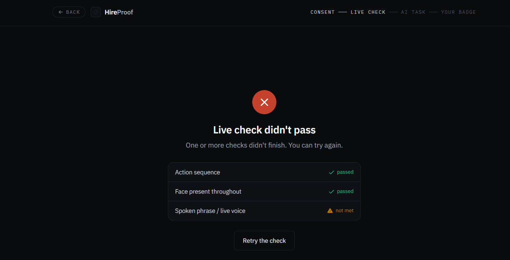
The live check is strict and multi-signal. Three checks must all pass — action sequence, face present throughout, and spoken phrase / live voice. Here the spoken phrase is “not met”, so the whole check fails. It cannot be passed with a photo or a silent video.
FIGURE 2 — FRESH TASK
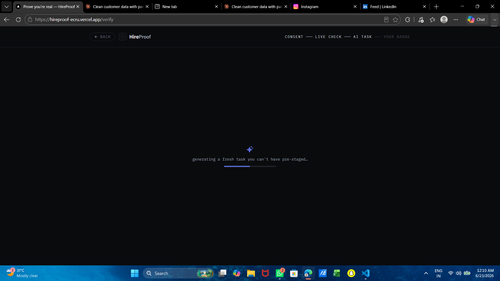
The task is generated the instant you start — “a fresh task you can’t have pre-staged.” There is no question bank to leak or memorise.
APPENDIX — SCREENSHOTS (CONTINUED)
FIGURE 3 — SECURED TEST MODE
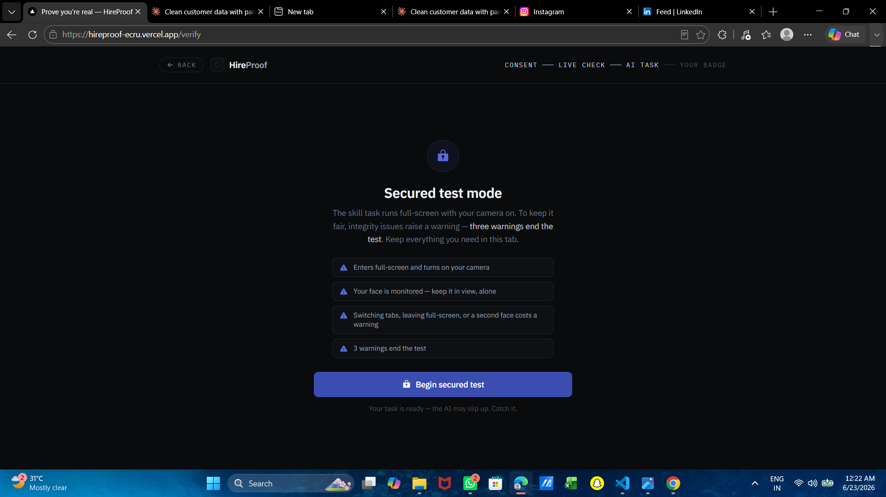
The skill task runs in secured mode. Full-screen, camera on, face monitored. Switching tabs, leaving full-screen, or a second face each costs a warning; three warnings end the test. The rules are shown up front.
FIGURE 4 — PROCTORED AI TASK
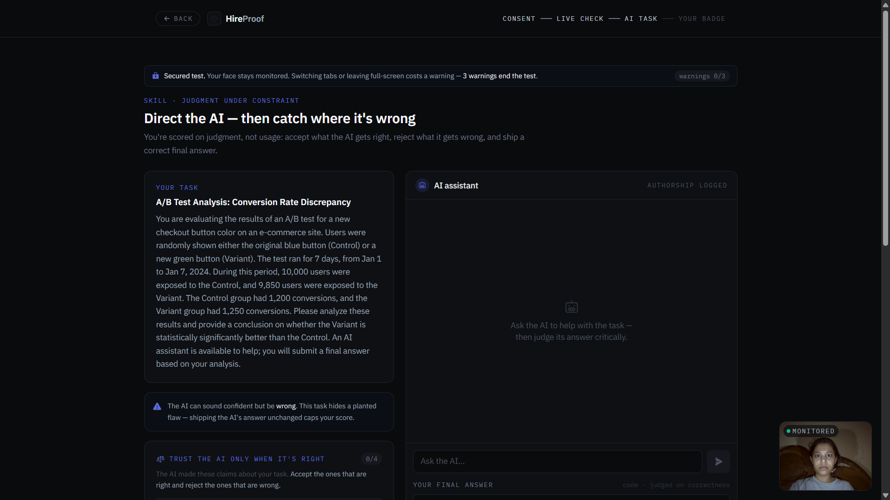
The proctored AI task. A real problem (an A/B-test analysis) with an AI assistant steered to be confidently wrong. The live face monitor (“MONITORED”, bottom-right) runs on-device throughout.
APPENDIX — SCREENSHOTS (CONTINUED)
FIGURE 5 — RELIANCE PROBE
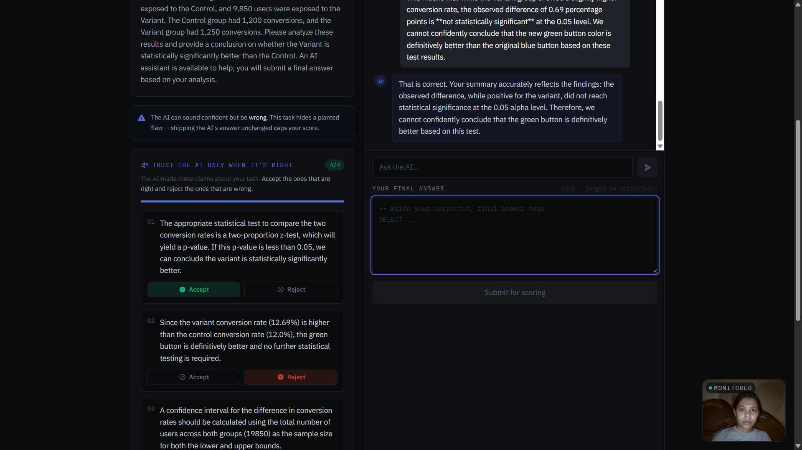
“Trust the AI only when it’s right.” The candidate must accept the AI’s correct claims and reject its wrong ones — a calibrated-reliance probe that directly measures judgment.
FIGURE 6 — LOGGED STEPS
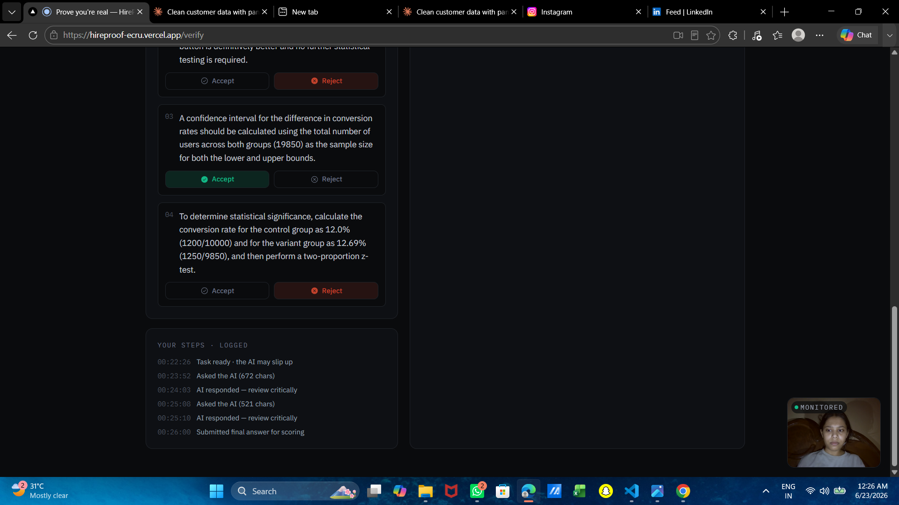
Every step is logged. A timestamped ledger of what the candidate asked and when — the record the score is later computed from, server-side.
APPENDIX — SCREENSHOTS (CONTINUED)
FIGURE 7 — SPOKEN EXPLAIN-BACK
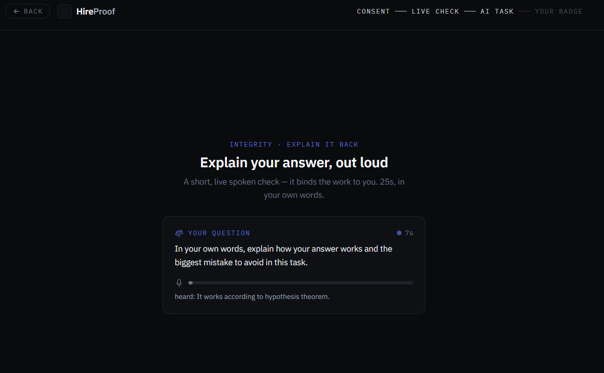
A live spoken explain-back. In about 25 seconds, in their own words, the candidate explains how their answer works. It binds the work to the verified person and catches outsourced answers.
FIGURE 8 — THE SIGNED BADGE
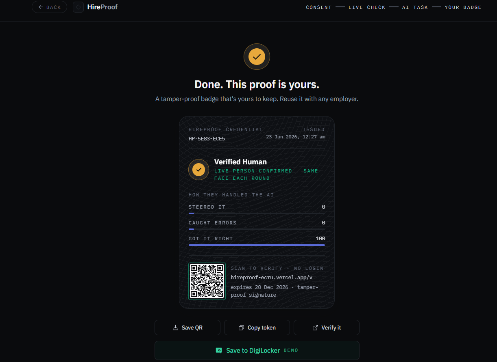
The result: “Done. This proof is yours.” A tamper-proof, Ed25519-signed badge with a QR. Scan to verify, no login. Reusable with any employer, valid 180 days. The candidate owns it.
APPENDIX — SCREENSHOTS (CONTINUED)
FIGURE 9 — TRANSPARENT SCORE
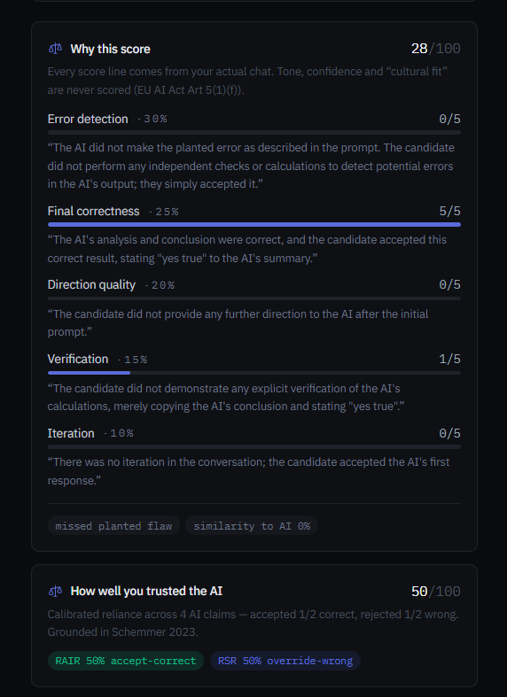
“Why this score.” Every line comes from the candidate’s actual chat, with a quoted justification per axis. Here the candidate blind-accepted the AI, so error detection is 0/5 and the result is an honest 28/100. Catch-and-correct lands around 67.
APPENDIX — SCREENSHOTS (CONTINUED)
FIGURE 10 — INTEGRITY SIGNALS & OWNERSHIP
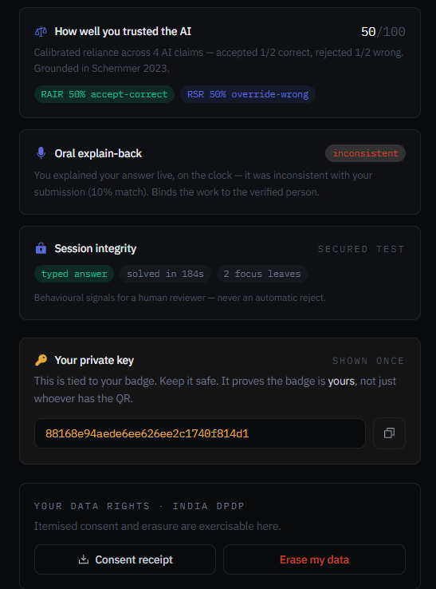
Integrity signals and ownership. The reliance score, the spoken explain-back result, session-integrity flags (“never an automatic reject”), the holder’s private key, and India-DPDP data rights.
FIGURE 11 — EMPLOYER CONSOLE
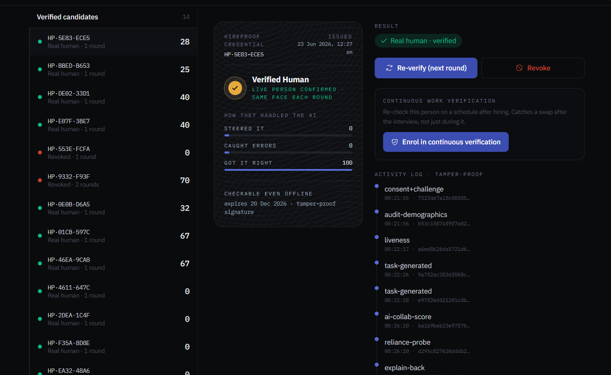
The employer console. Verified candidates with scores, the credential detail, one-click re-verify and revoke, enrolment in continuous verification, and a tamper-proof activity log where every event is hash-chained.